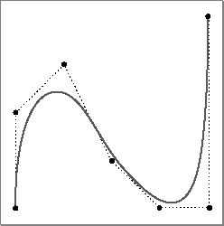

NURB Curves
A nonuniform rational B-spline (NURB) curve is a three-dimensional projection of a four-dimensional curve, with an optional set of attributes. A NURB curve is defined by theTQ3NURBCurveDatadata type. See "Creating and Editing NURB Curves," beginning on page 4-160 for a description of the routines you can use to create and edit NURB curves. Figure 4-18 shows a NURB curve.
typedef struct TQ3NURBCurveData { unsigned long order; unsigned long numPoints; TQ3RationalPoint4D *controlPoints; float *knots; TQ3AttributeSet curveAttributeSet; } TQ3NURBCurveData;
Field Description
order- The order of the NURB curve. For NURB curves defined by ratios of cubic B-spline polynomials, the order is 4. In general, the order of a NURB curve defined by polynomial equations of degree n is n+1. The value in this field must be greater than 1.
numPoints- The number of control points that define the NURB curve. The value in this field must be greater than or equal to the order of the NURB curve.
controlPoints- A pointer to an array of rational four-dimensional control points that define the NURB curve.
knots- A pointer to an array of knots that define the NURB curve. The number of knots in a NURB curve is the sum of the values in the
orderandnumPointsfields. The values in this array must be nondecreasing (but successive values may be equal, up to a multiplicity equivalent to the order of the curve).curveAttributeSet- A set of attributes for the NURB curve. The value in this field is
NULLif no NURB curve attributes are defined.